設定画面
表示するページ・デザインの既定・構造化データ・プラグインの削除のときのデータを決める設定画面の、すべての項目を説明します。
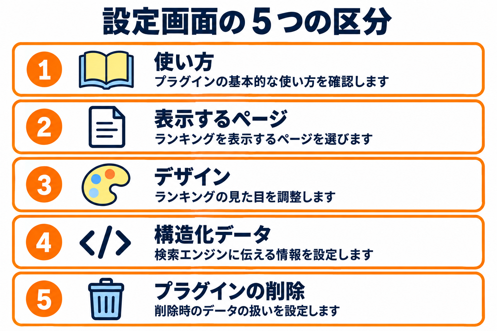
設定画面では、すべてのランキングに共通する内容を決めます。ランキングごとに変えられるもの（デザインの型・ボタンの文言など）は、ここの設定が既定になります。
開き方
- ランキング一覧の見出しの下の、タブ「設定」をクリックします。
- または、プラグイン一覧の、このプラグインの行の「設定」リンクをクリックします。
タブ「設定」とプラグイン一覧の「設定」リンクは、管理者にだけ表示されます。管理者以外は、画面を開けません（アクセスできないことを知らせるメッセージが表示されます）。
画面の構成
上から順に、見出しと「ランキングを新規作成」のボタン・タブ（ランキング一覧｜設定）・次の 5 つの区分が並び、いちばん下に「変更を保存」のボタンがあります。
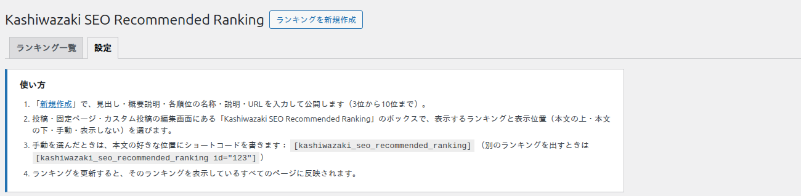
使い方
このプラグインの使い方を、4 つの手順で案内する欄です。内容を確かめるだけで、入力する項目はありません。
- 「新規作成」で、見出し・概要説明・各順位の名称・説明・URL を入力して公開します（3 位から 10 位まで）。
- 投稿・固定ページ・カスタム投稿の編集画面にあるボックスで、表示するランキングと表示位置を選びます。
- 手動を選んだときは、本文の好きな位置にショートコードを書きます。
- ランキングを更新すると、そのランキングを表示しているすべてのページに反映されます。
表示するページ
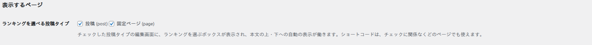
| 項目 | 説明 | 既定値 |
|---|---|---|
| ランキングを選べる投稿タイプ | チェックした投稿タイプの編集画面に、ランキングを選ぶボックスが表示され、本文の上・下への自動の表示が働きます。 | 公開されているすべての投稿タイプ |
- 一覧には、投稿・固定ページと、お使いのサイトにあるカスタム投稿の種類が出ます（メディアの添付ファイルと、ランキングそのものは出ません）。
- チェックを外した投稿タイプでは、編集画面にボックスが出ず、自動の表示も働きません。
- ショートコードは、チェックに関係なく、どのページでも使えます。
デザイン
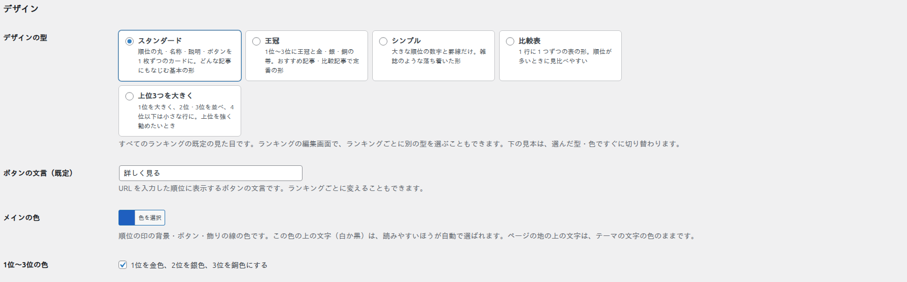
| 項目 | 説明 | 入力できる範囲・既定値 |
|---|---|---|
| デザインの型 | すべてのランキングの既定の見た目です。ランキングの編集画面で、ランキングごとに別の型を選ぶこともできます。 | 既定は「スタンダード」 |
| ボタンの文言（既定） | URL を入力した順位に表示するボタンの文言です。ランキングごとに変えることもできます。 | 40 文字まで。既定は「詳しく見る」 |
| メインの色 | 順位の印の背景・ボタン・飾りの線の色です。 | 既定は青 |
| 1位〜3位の色 | 「1位を金色、2位を銀色、3位を銅色にする」のチェックです。 | 既定はオン |
| 見本 | 選んだ型と色で、ランキングの見本を表示します（確かめるだけで、入力する項目はありません）。 | ― |
デザインの型
5 つの型から選びます。それぞれの見た目は、デザイン・ボタン・リンクのページにあります。型を選ぶと、すぐ下の「見本」が切り替わります。
| 型 | 説明 |
|---|---|
| スタンダード | 順位の丸・名称・説明・ボタンを 1 枚ずつのカードに。どんな記事にもなじむ基本の形 |
| 王冠 | 1 位〜3 位に王冠と金・銀・銅の帯。おすすめ記事・比較記事で定番の形 |
| シンプル | 大きな順位の数字と罫線だけ。雑誌のような落ち着いた形 |
| 比較表 | 1 行に 1 つずつの表の形。順位が多いときに見比べやすい |
| 上位3つを大きく | 1 位を大きく、2 位・3 位を並べ、4 位以下は小さな行に。上位を強くすすめたいとき |
メインの色
「色を選択」をクリックすると、色を選ぶ画面が開きます。色の画面の中から選ぶか、色の数値を入力できます。「デフォルト」をクリックすると、初期の色（青）に戻ります。
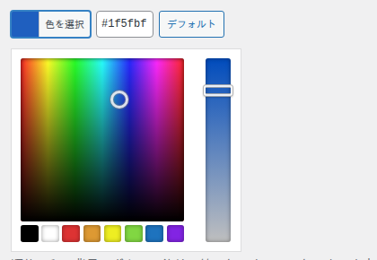
- 色の上に載る文字（順位の数字・ボタンの文字）は、読みやすいほうが（白か黒）自動で選ばれます。明るい色を選んでも、文字が読めなくなることはありません。
- ページの地の上の文字は、お使いのテーマの文字の色のままです。
- 色の数値は、「#」で始まる 3 桁か 6 桁の形だけが使えます。それ以外の形で保存すると、初期の色（青）になります。
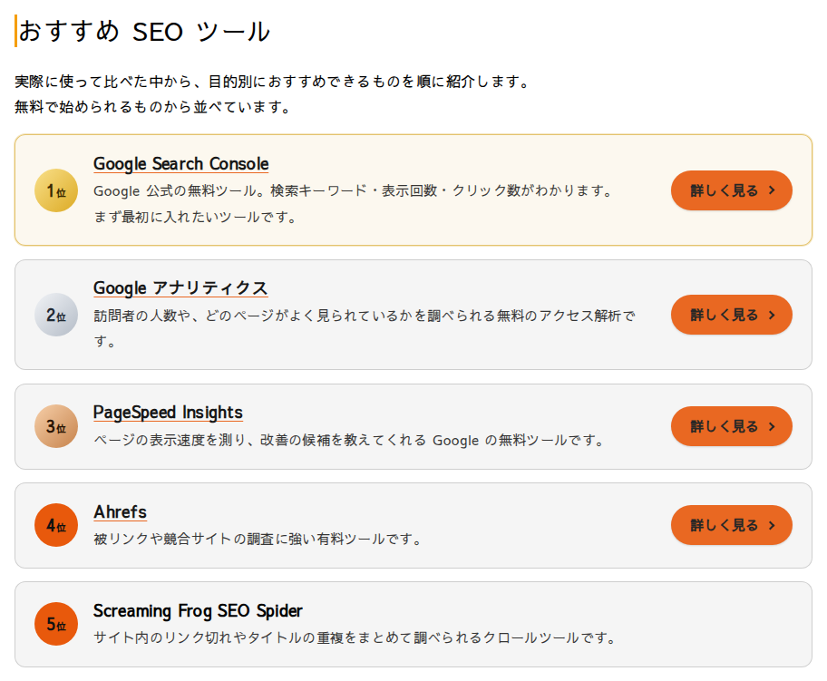
1位〜3位の色
| 設定 | 結果 |
|---|---|
| オン（既定） | 1 位を金色、2 位を銀色、3 位を銅色で表示します。 |
| オフ | 1 位〜3 位も、メインの色で表示します。 |
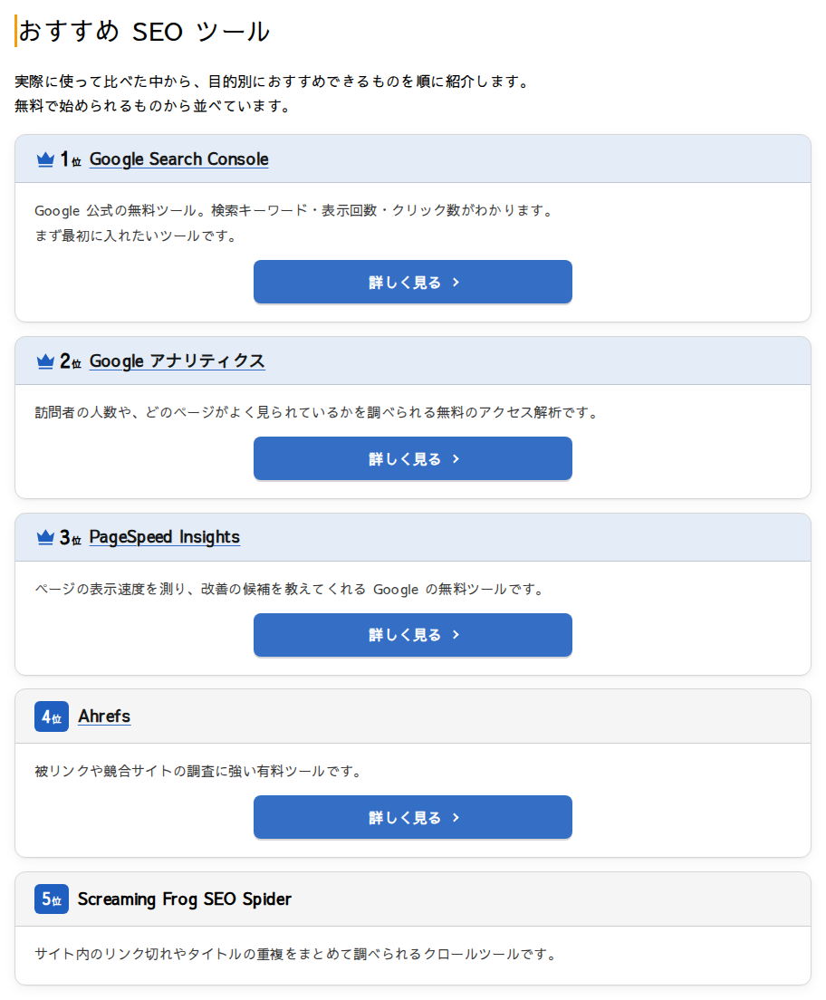
見本
「デザイン」の区分の下に、見本のランキング（「見本の商品 A」〜「見本の商品 D」）が表示されます。型・メインの色・1位〜3位の色を変えると、保存しなくても、すぐに見本が切り替わります。上の 2 つのボタンで、パソコンとスマホの幅も見比べられます。
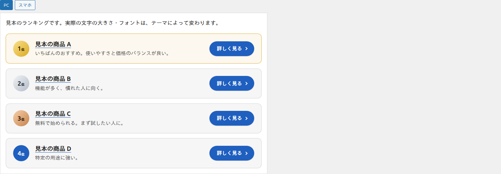
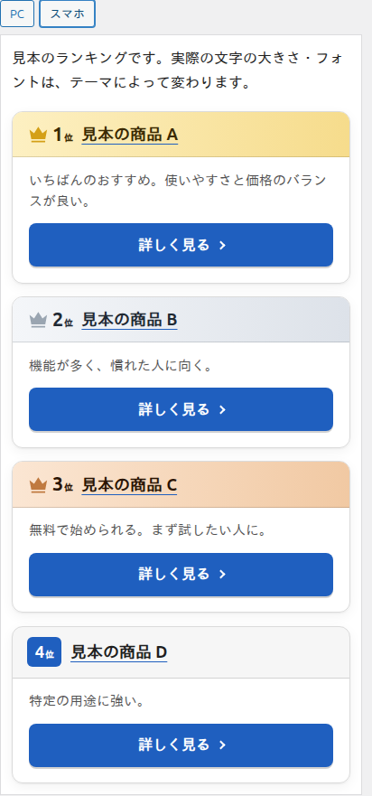
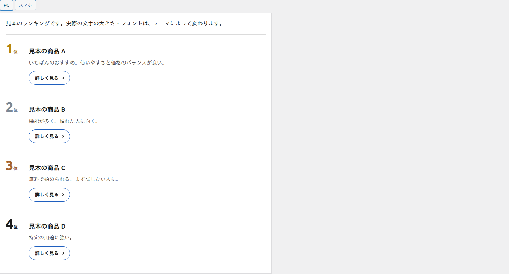
見本の文字の大きさ・フォントは、お使いのテーマによって変わります。見本で見た目を決めたあと、「変更を保存」をクリックして、設定を保存してください。
構造化データ
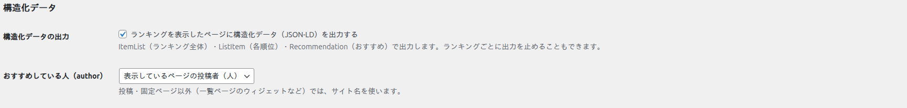
| 項目 | 説明 | 既定値 |
|---|---|---|
| 構造化データの出力 | 「ランキングを表示したページに構造化データ（JSON-LD）を出力する」のチェックです。外すと、すべてのランキングで出力を止めます。ランキングごとに出力を止めることもできます。 | オン |
| おすすめしている人（author） | 構造化データに入れる、おすすめしている人を選びます。 | 表示しているページの投稿者（人） |
| おすすめしている人の選択肢 | 結果 |
|---|---|
| 表示しているページの投稿者（人） | ページの投稿者の名前を入れます。投稿・固定ページ以外（一覧ページのウィジェットなど）では、サイト名を使います。 |
| サイト名（組織） | サイトの名前を入れます。 |
| 出力しない | おすすめしている人は、入れません。 |
構造化データの中身は、構造化データのページで説明しています。
プラグインの削除
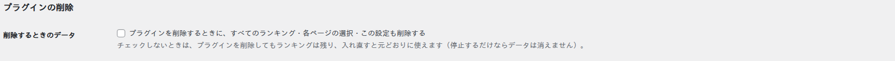
| 「削除するときのデータ」の設定 | プラグインを削除したときの動き |
|---|---|
| チェックなし（既定） | ランキング・各ページの選択・この設定は残ります。プラグインを入れ直すと、元どおりに使えます。 |
| 「プラグインを削除するときに、すべてのランキング・各ページの選択・この設定も削除する」にチェック | プラグインを削除すると、すべてのランキング・各ページの選択・この設定を削除します。 |
チェックを入れてプラグインを削除すると、つくったランキングも消え、元に戻せません。ランキングを残したいときは、チェックを入れないでください。プラグインを停止するだけなら、チェックに関係なく、データは消えません。
設定を保存する
- 画面のいちばん下の「変更を保存」をクリックします。
- 画面の上に「設定を保存しました。」と表示されます。
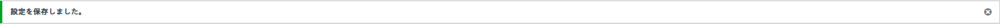
- 保存した設定は、すべてのランキングに反映されます。ランキングごとに型やボタンの文言を決めているものは、そちらが優先されます。
- ボタンの文言を空にして保存すると、初期の「詳しく見る」になります。